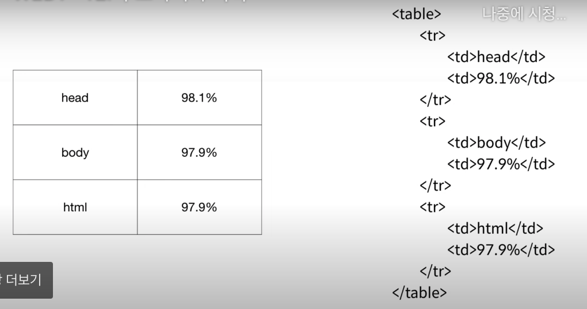

For what? not a consumer but a supllier Im very nervous now cause i do not have a JOB nowadays.왜 br태그보다 p태그가 더 가치있는가?
왜 br태그보다 p태그가 더 가치있는가?
br태그는 단순히 줄바꿈을 의미하지만 p태그는 css 스타일 변화를 통해 간격을 조절할 수 있기 때문이다. 예를한번 들어볼까?
단순히 간격을 벌리고 싶을때는 br코드가 훨씬 간편할 수 있지 별도로 닫을 필요가 없고, 여러개 중복하면 많이 띄울수도 있잖아?
그런데 매번 단락을 표현하고 싶을때마다 br몇번씩 하는것보다는 한번에 스타일을 정해서 단락을 규정하는것이 훨씬 통일성 있고 방대한 양의 자료를 정리할 때는 오히려 더 쉬워진다는 것.
왜 br태그보다 p태그가 더 가치있는가?
br태그는 단순히 줄바꿈을 의미하지만 p태그는 css 스타일 변화를 통해 간격을 조절할 수 있기 때문이다. 예를한번 들어볼까?
단순히 간격을 벌리고 싶을때는 br코드가 훨씬 간편할 수 있지 별도로 닫을 필요가 없고, 여러개 중복하면 많이 띄울수도 있잖아?
그런데 매번 단락을 표현하고 싶을때마다 br몇번씩 하는것보다는 한번에 스타일을 정해서 단락을 규정하는것이 훨씬 통일성 있고 방대한 양의 자료를 정리할 때는 오히려 더 쉬워진다는 것.
태그의 심화된 문법인 속성(attribute)에 대해여
<이미지태그를 이용하여 이미지를 넣은 모습>
<이미지태그를 이용, width를 이용하여 너비를 퍼센트로 변환한 이미지를 넣은 모습>
테이블 만들기 도전! 테이블 만들기는 영상을 보니까

이렇게 하라는데? 내가 만든것은 밑에...근데 선이 안보인다.
| 머리 | 가슴 | 배 |
| 33.3% | 33.3% | 33.3% |